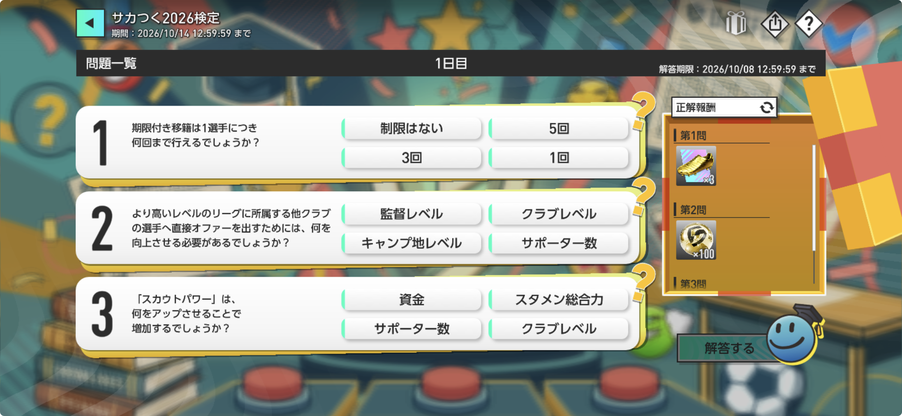
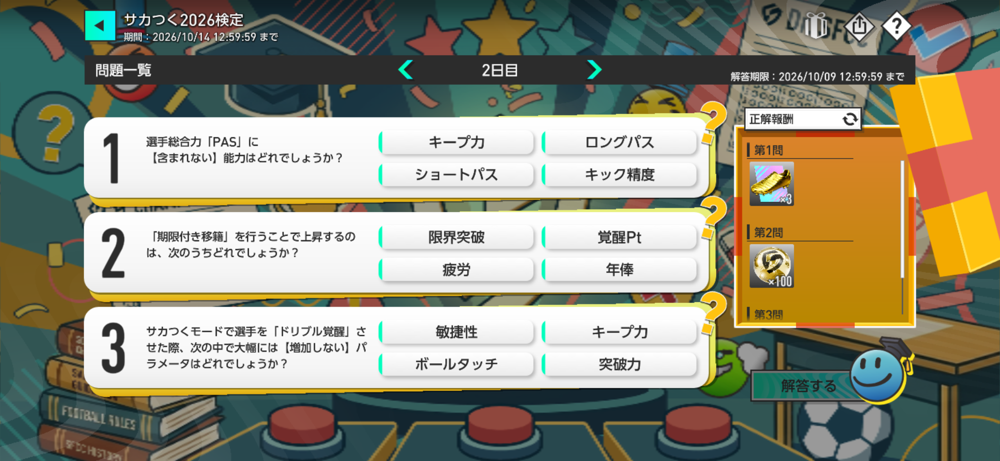
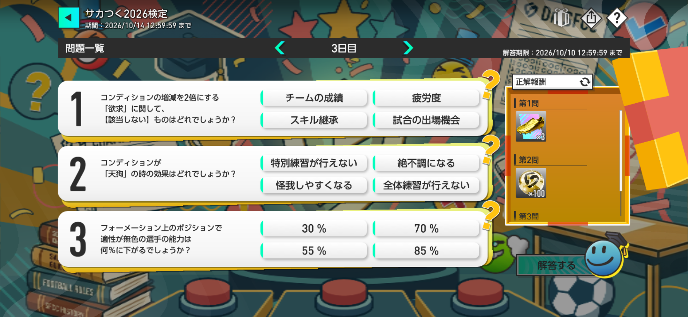

【サカつく2026】第2回サカつく検定の答え・正解まとめ｜1日目～7日目
2026年10月7日から開催中の「第2回サカつく検定」の問題、4つの選択肢、答えを毎日まとめます。3日目までの問題を掲載中です。答えは各問題の「答えを表示」ボタンから確認できます。
第2回サカつく検定の答えを速報更新
3日目の問題・選択肢・速報回答まで掲載しました。答えと解説は初期状態では非表示です。各問題の「答えを表示」を押すと、正解の選択肢と解説を確認できます。
第2回サカつく検定 1日目の答え【10月7日】

- 制限はない
- 5回
- 3回
- 1回
解説：期限付き移籍は同じ選手を何度も繰り返し利用できる育成方法ではありません。監督ノートでは、期限付き移籍は1選手につき1回までと明記されています。
- 監督レベル
- クラブレベル
- キャンプ地レベル
- サポーター数
解説：監督Lvを上げることで人事関連の機能が解放・強化され、直接オファーできる対象も拡大していきます。より高いレベルのリーグに所属する選手へ直接オファーを出すために必要なのは監督レベルの向上です。
- 資金
- スタメン総合力
- サポーター数
- クラブレベル
解説：スカウトパワーはクラブレベルに応じて増加します。直接オファーの成功にも関係するため、クラブLvを上げることは選手獲得能力の強化にもつながります。
第2回サカつく検定 2日目の答え【10月8日】

- キープ力
- ロングパス
- ショートパス
- キック精度
解説：サカつく2026の選手ステータス定義では、PASは「ショートパス・ロングパス・キック精度」の3項目で構成しています。キープ力はDRBを構成するパラメータなので、PASには含まれません。
- 限界突破
- 覚醒Pt
- 疲労
- 年俸
解説：期限付き移籍は選手を他クラブへ送り出して育成するシステムで、複数の移籍先で成長項目として「覚醒Pt」が上昇します。限界値が上昇する移籍先もありますが「限界突破が上昇する」とは表現しない為「覚醒pt」が正解です。
- 敏捷性
- キープ力
- ボールタッチ
- 突破力
解説：監督ノートでは、ドリブル覚醒で大幅に上昇するパラメータは「突破力・キープ力・ボールタッチ」とされています。敏捷性はこの3項目には含まれません。敏捷性はショートパス覚醒や走力覚醒では大幅上昇の対象になります。
第2回サカつく検定 3日目の答え【10月9日】

- チームの成績
- 疲労度
- スキル継承
- 試合の出場機会
解説：監督ノートでは、欲求として「チーム状態」はチームの成績、「体調」は疲労度、「キャリア」は試合の出場機会を重視し、重視していることに関するコンディションの増減が2倍になると説明されています。「スキル継承」は欲求の対象として挙げられていないため、該当しません。
- 特別練習が行えない
- 絶不調になる
- 怪我しやすくなる
- 全体練習が行えない
解説：監督ノートでは、「天狗」になるとコンディションは絶好調で固定される一方、特別練習や選手継承ができなくなると説明されています。選択肢の中では「特別練習が行えない」が該当します。
- 30%
- 70%
- 55%
- 85%
解説：監督ノートのポジション適正では、能力補正は赤100%・オレンジ85%・黄色70%・無色55%です。そのため、適性が無色のポジションで起用した場合は55%まで低下します。
このページの更新方針
- 第2回サカつく検定は、4日目以降もこのページへ毎日追記します。
- 公式画像から問題文・4つの選択肢を転記し、表記を勝手に変更しません。
- 監督ノートや当サイト保有データに明確な根拠がある場合は、該当内容を確認して速報回答を掲載します。
- 監督ノートや当サイト保有データだけで判断できない場合は、推測で正解を断定せず「確認中」とします。
- ゲーム内の公式結果を確認後、回答ステータスを「公式正解確認済み」に更新します。